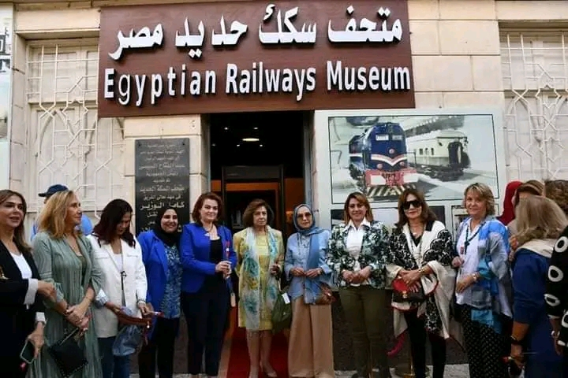
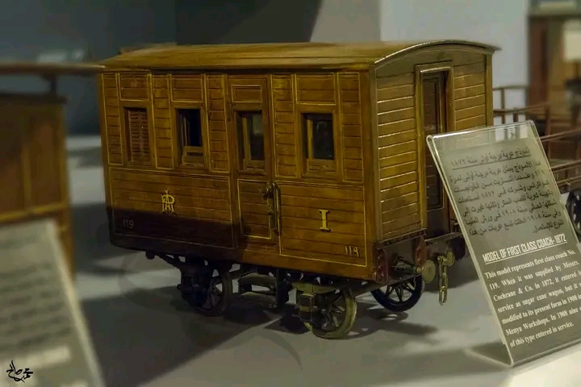
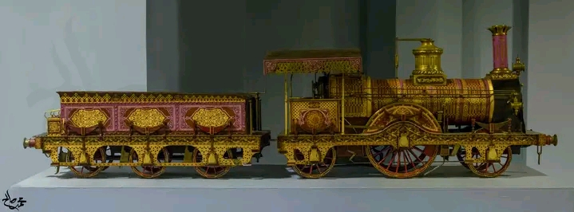
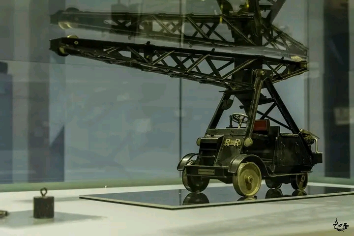
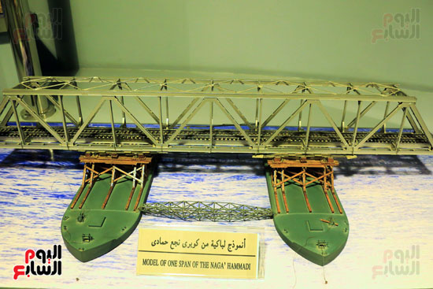
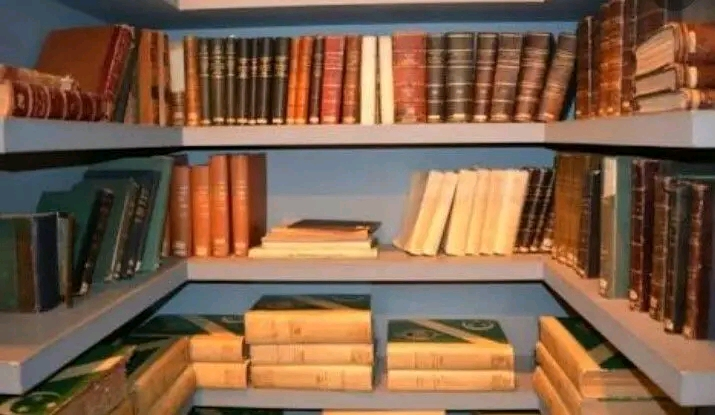
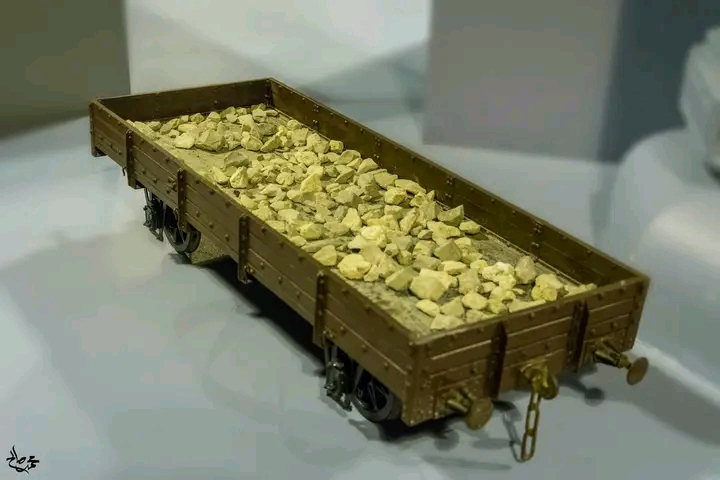

2022-2023
The Railway Museum is one of the most prominent Egyptian museums, as it includes within its walls a collection of historical artefacts that tell the history of the Egyptian Railways Authority. A scientific and technical museum in Egypt, on the occasion of the International Railway Conference in January 1933, and the Authoritys museum were reopened in March 2016.
The idea was directed to establish the Railway Museum to be the nucleus of a world art museum in Egypt, on the occasion of the convening of the International Railway Conference in January 1933. It was prepared and opened to receive visitors on January 15, 1933. Thus, the members of the conference were allowed to witness the first railway museum in the East , The museum includes between its walls nearly seven hundred models, exhibits, and a collection of documents, maps, and statistical data, all of which show the development of transport and railways.


The railway owns more than 700 models of trains and railway cars, and the Egyptian Railway Museum includes more than 300 historical models of railway transport, including artefacts, The museum is located in Ramses Square, next to Misr Station, Museum ticket for the Egyptians five pounds, The museum has two floors and The museum operates daily from 9:00 in the morning until two in the afternoon, except for Friday.

It presents a wide range of models explaining the developments of the first locomotives in the world and Egypt, including a model for the first idea of a locomotive that appeared in the year 1783, and another for the first locomotive that ran in Egypt in 1854, and a third in a natural size divided into two parts showing all the parts of the locomotive as well as models of old locomotives, wagons and private saloons. And her talk, which shows the development of the Egyptian railways since its inception in 1854, until the latest electric diesel locomotives.

This section explains how the trains were directed in the past by humans, and how they evolved into automatic signals that direct the trains on their way to the various lines and avoid them from accidents and dangers, and then they developed into electric ones.

They are models and pictures of a group of old and modern stations, and others for some types of railway bridges, including fixed ones and mobile ones, showing their construction, development and history.

The museum also includes a library that contains a large number of volumes and historical, artistic and statistical books on transport and railways in Egypt and the world. There is an integrated set of references and stereotyped and written documents of artistic and historical value.

According to the website of the Egyptian Railways Authority, the museum has several technical sections: including what displays the means of transportation at the dawn of history, especially among the ancient Egyptians. And the Romans and another for simple transportation, in which it relied on the strength of man and animals.